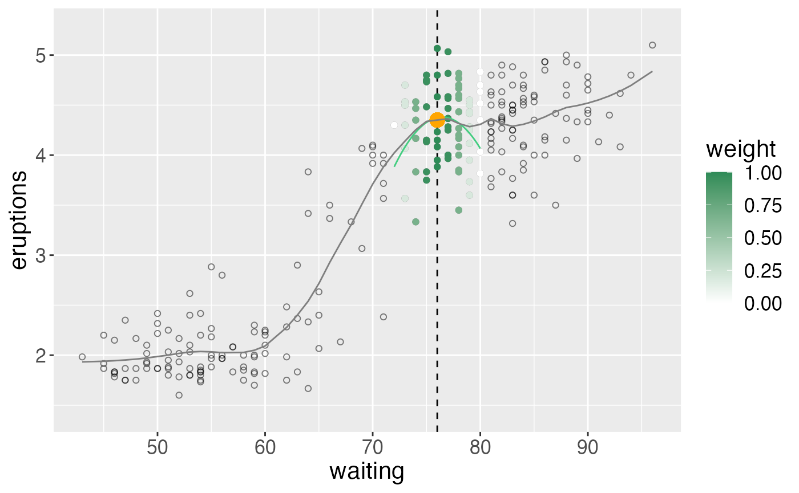

Loess Regression
Jason Bryer, Ph.D. and Bruce Dudek, Ph.D.
2022-03-01
Source:vignettes/loess.Rmd
loess.RmdDescription:
LOESS (locally estimated scatterplot smoothing) provides a method for visualizing the relationship between variables when classical linear and non-linear least squares regression may not be the most appropriate. The non-parametric technique explores the relationship between variables using local regressions using only regions of the explanatory variable (IV).
This shiny app permits visualization of those local regressions along the whole of the X variable space. The way that the loess curve is calculated is to use the predicted value in the response dimension (DV) for the chosen X value based on the local regression. These predicted points are visualized with the orange dot on the plot and the curve can be seen to be “drawn” when using animation of the centering slider.
The ‘loess’ function in R provides the capability for either first or second degree polynomial specification for the loess fit (linear or quadratic) and this shiny app provides that same choice along with the “span” specification which affects the smoothing outcome. Center and span work by locating the local regressions and determining the X axis range employed.
The loess algorithm uses in R and in this shiny app follow an approach developed by Cleveland and which was apparently also in use in some fields as the Savitsky-Golay filter (Wikipedia). It weights data points closer to the center of the localized regression more heavily than those more distanced.
This app does not permit choice of smoothing family. It uses the default Gaussian kernel (least squares approach) of the loess function in R.
The weights for each x are calculated using:
\[\left( 1 - \left(\frac{dist}{max(dist)}\right)^3 \right)^3\]
when \(\alpha < 1\) (i.e. span).

References
Cleveland, W.S. (1979) “Robust Locally Weighted Regression and Smoothing Scatterplots,” Journal of the American Statistical Association, Vol. 74, pp. 829-836.
Cleveland, W.S. and Devlin, S.J. (1988) “Locally Weighted Regression: An Approach to Regression Analysis by Local Fitting,” Journal of the American Statistical Association, Vol. 83, pp. 596-610.
Savitzky, A.; Golay, M.J.E. (1964). “Smoothing and Differentiation of Data by Simplified Least Squares Procedures”. Analytical Chemistry. 36 (8): 1627–39.
Built using Shiny by Rstudio and R, the Statistical Programming Language.